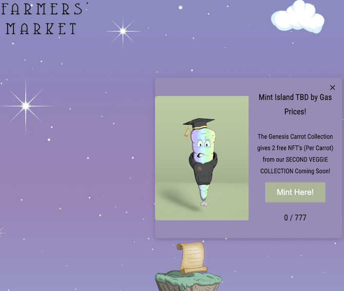
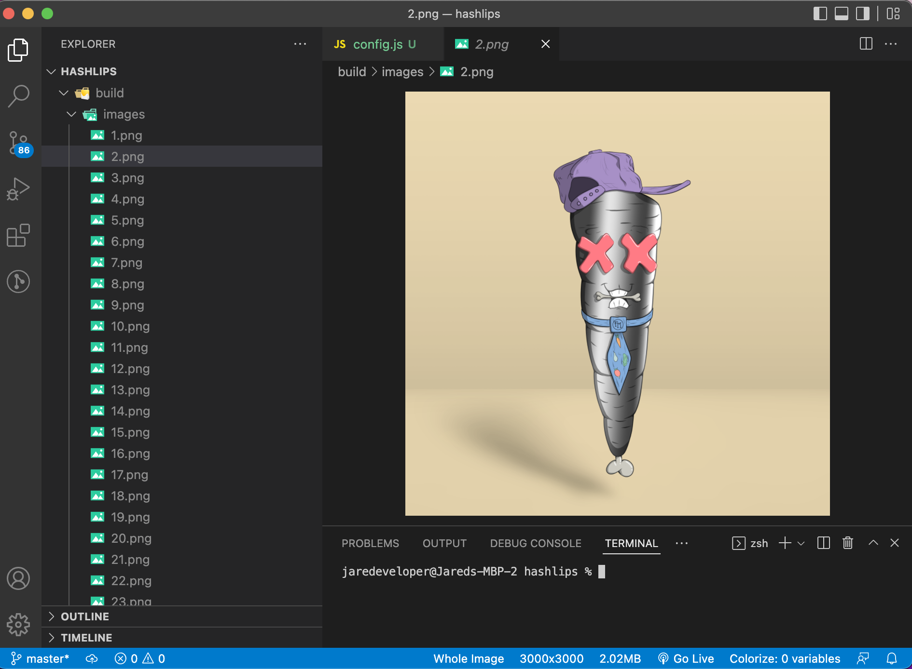
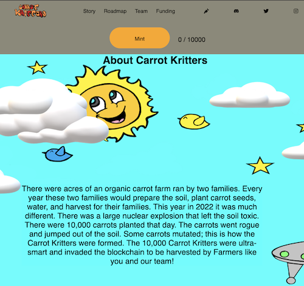
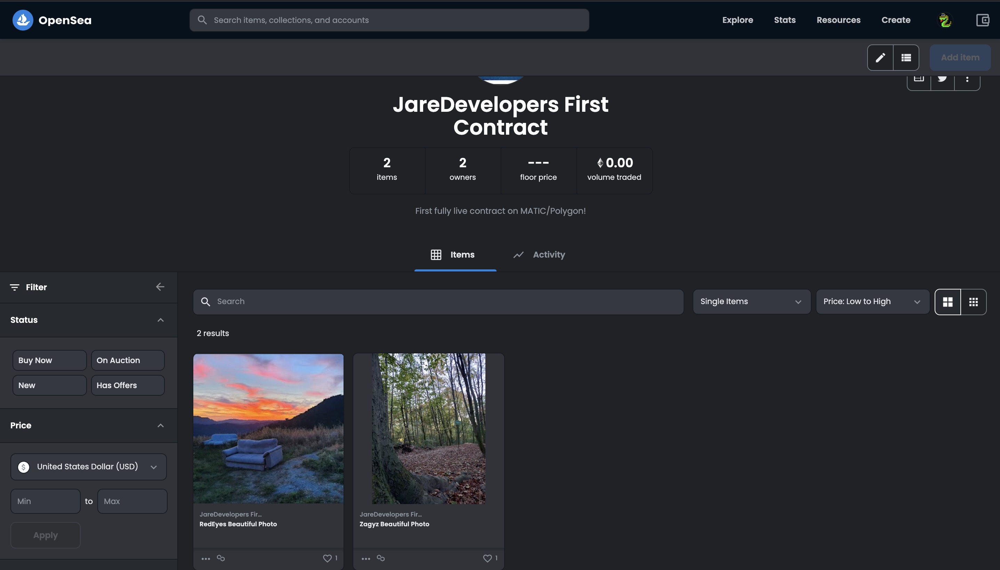
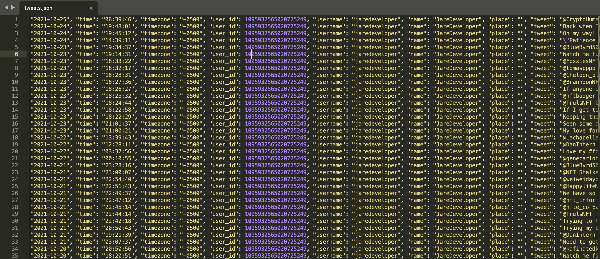
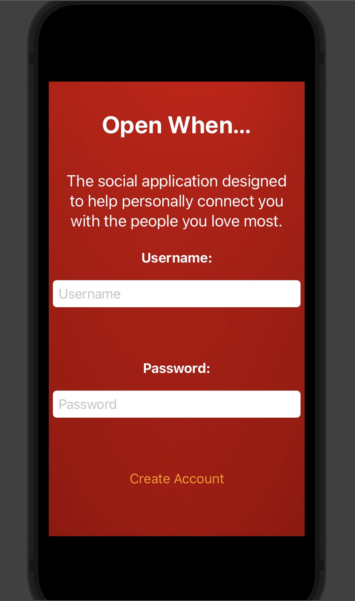
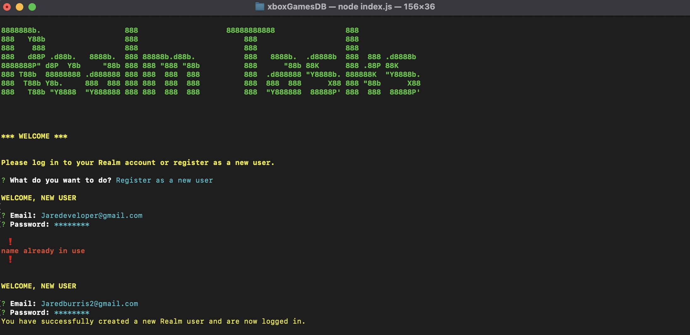

Farmers' Market NFT
Client/Personal Project

This is currently a live website that is being constantly developed on by myself personally. After the Carrot Kritter NFT
(seen below) went sideways my client, myself, and one other professional got together and decided on creating the Farmer's
Market NFT, I am the Developer and they are the Artists/Marketers. I created this fully responsive React website with media queries
just as I did with the Carrot Kritters but this website has much more added into it, like the clouds moving with animation, and the
floating islands animations as well. I even have Modals developed to account for the pop-ups on each island, and I will be developing
functionality to all islands in time, for example when we launch the button inside Mint Island will work correctly to mint our NFT.
The only thing we are waiting on to launch is the gas price in crypto to go down so it does not cost much for our smart contract to
start selling/minting the NFT. The last thing left to do is to connect our smart contract with the generated carrots on IPFS,
connect the smart contract with the website, and spend the money in gas to launch our NFT project! See the Live website with the
button below, join our Discord through the website if you're interested! :)
Hashlips Art Generation
NFT Generation

I used the program Hashlips I pulled from github to generate the NFT art for the Farmer's Market NFT. Using this program taught me
a lot in the scripting sense and in art generation with code. I think the entire concept of generation with a program is
interesting and doing it is really cool. Watching all of the traits you set specific rarities too generate in the program and even
seeing the ones that try to generate and are the same get deleted and generated again is honestly amazing. Messing around
with the program a little bit and seeing the brightness of all of the art change and just changing a few of the parameters here and
there make it something really fun to do whether you're doing it for NFT generation or just general art.
Carrot Kritter NFT
Client Project

I built this website for 2 clients that wanted a responsive React website to sell or mint an NFT to buyers or investors.
I spent a lot of time taking the clients art, ideas, and assets and turning them to life. I built 6 sections to this website,
the first one being the Navbar, then the Mint section, Roadmap section, Team section, Funding section, and lastly the Footer
section. I used Media Queries to ensure a responive website at 375px, 420px, 768px, 1440px, and 1920px, so at every screen size
for phones, tablets, and most computers the website will adjust accordingly and fit that screen. The plan was to finish this
website and move on to building out the Smart Contract and start minting or selling out NFTs, well with a couple of road bumps one of the
clients decided not to move forward leaving me with half payment a website 95% done and another client upset. After this I decided to move
forward with the other client and a new partner and create Farmers' Market NFT (seen above). You can check out the website on github clicking the
button below!
Polygon NFT
OpenSea NFT Collection

For this Blockchain project I wrote a Smart Contract on Remix with OpenZeppelin and deployed it with Moralis hosting to OpenSea. First I
did this through the testnet section of OpenSea with Ethereum, after making sure all was set up I launched it on Polygon through OpenSea on
the mainnet to give the NFT's the ability to be bought and sold. I only had 4 NFT's altogether but it was a successful launch and I transferred
some of them to a few buddies. This process ended up only costing me 0.17$ cents to get them on my profile and 0.04$ cents to transfer the NFT itself. I
personally still hold one as it was my first contract launched and I am excited about developing more Web3 and blockchain! Check out the contract on
Opensea below.
Twitter Script
Python Data Analysis

I wrote this Python Data Analysis twitter script to count the total amount of tweets from a specific hashtag from a list of users
while pulling each one of those tweets and storing them in a json file. the json file can be parsed/formatted and stored within Pandas
for easy analysis with graphs/etc. I was commissioned with this assignment by an NFT project to promote members to tweet for the project,
this would allow for constant tracking with ease, expectation of rank and potential gain in investments/collections. My initial plan was to host this script on
a website to keep my intellectual property secure and implement a database with all of the members for easy additions/removal of members. Sadly,
the project itself was on a downward slope and did not want to pay me to make this website a reality so the script was used only a couple times by
myself and a few trusted friends.
Open When...
iOS Application

I am currently developing this iOS application in my spare time, I really enjoy developing it and I think it has an amazing concept i'd like to turn to life!
The project is an Open When Letter application that can be used by loved ones around the world, each user has an account and each
one of these users can add others. After the request is accepted either party can now send a letter to the other. The letters themselves
are time locked based on the sender's time allotment and when it reaches that time the letter can be opened and read by the recipient.
Hosted by a firebase database to hold each account and letters, it even has potential to put extra items inside each letter,
for example a bit of money from a grandparent. I am working out the front-end currently with firebase already set up, I just need
to work out the design in the front-end and then finish development in the back-end and it will be shipped to the Apple Developers!
ZooMonitor
iOS Application

This application was reverse engineered from my zooMonitoring.java application that didn't work, to a nice looking responsive iOS
application. This was one of the last programs I developed in college and I had a really good time doing it. I am
interested in iOS development and this project really helped me dip my toes in and realize I can build apps!
I am using this example to help showcase my skills in developing applications, reverse engineering applications,
designing applications and increasing complexity in applications.
XboxGamesDB
MongoDB/Realm/Node.Js Interface

I have created a MongoDB/Realm/Node.js command line interface that holds the xbox games located on my internal hard
drive. This cross platform interface makes it easy to run CRUD functionality just by answering questions, account creation
for realm available as well. This database project is included to showcase my skills not only with databases in general, but
also with MongoDB, Realm, and Node.js.